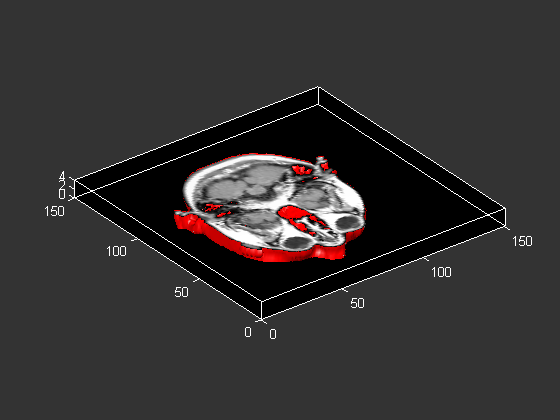
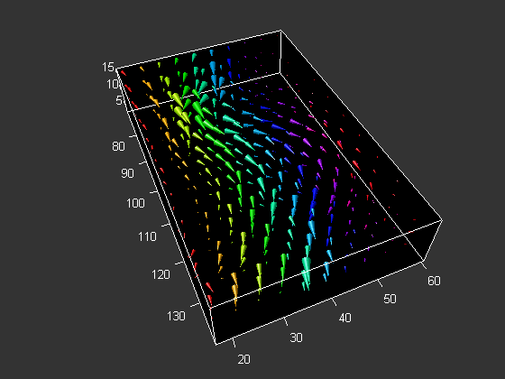
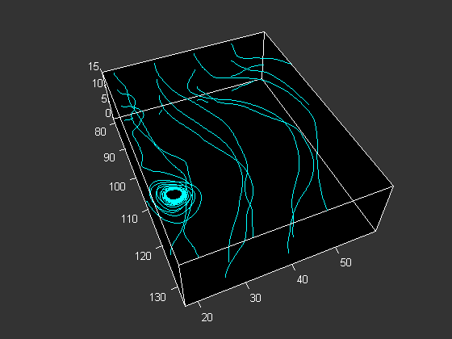
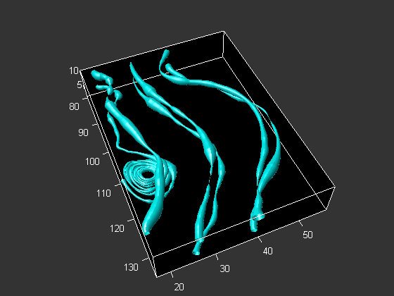
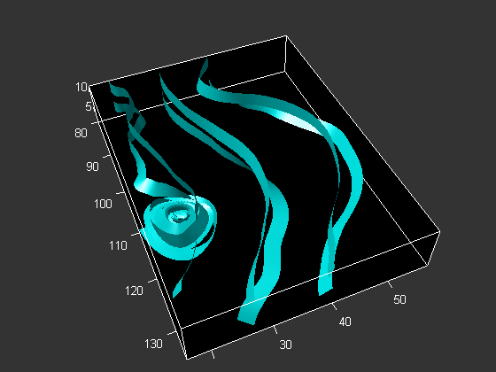
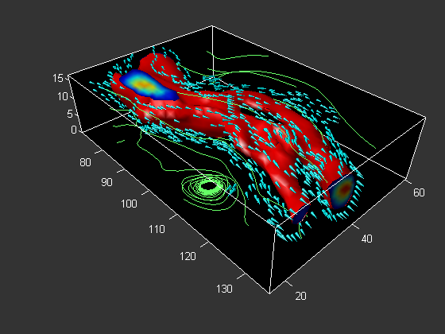

Here are some examples of volume visualizations in MATLAB.
See also ISOSURFACE, STREAMTUBE, STREAMRIBBON,
STREAMLINE, CONEPLOT.colordef(gcf,'black') load mri; D = squeeze(D); [x y z D] = subvolume(D, [nan nan nan nan nan 4]); p = patch(isosurface(x,y,z,D, 5), 'FaceColor', 'red', 'EdgeColor', 'none'); p2 = patch(isocaps(x,y,z,D, 5), 'FaceColor', 'interp', 'EdgeColor', 'none'); isonormals(x,y,z,D,p); view(3); daspect([1 1 .4]) colormap(gray(100)) camva(9); box on camlight(40, 40); camlight(-20,-10); lighting gouraud
cla load wind [cx cy cz] = meshgrid(linspace(71,134,10),linspace(18,59,10),3:4:15); daspect([1 1 1]) h=coneplot(x,y,z,u,v,w,cx,cy,cz,y,3); set(h,'EdgeColor', 'none'); colormap(hsv); box on; axis tight camproj perspective; camva(35); campos([175 10 85]); camtarget([105 40 0]) camlight left; lighting gouraud
cla [sx sy sz] = meshgrid(80, 20:10:50, 0:5:15); h=streamline(x,y,z,u,v,w,sx,sy,sz); set(h, 'Color', 'cyan'); daspect([1 1 1]) box on; camproj perspective; camva(32); axis tight campos([175 10 85]); camtarget([105 40 0]) camlight left; lighting gouraud
Useful for visualizing divergence of a vector field
cla [sx sy sz] = meshgrid(80, [20 30 40], [5 10]); daspect([1,1,1]); h=streamtube(x,y,z,u,v,w,sx,sy,sz); set(h,'facecolor','cyan','edgecolor','none'); box on; camproj perspective; axis([70 138 17 60 2.5 16]); axis tight camva(28); campos([175 10 95]); camtarget([105 40 0]) camlight left; lighting gouraud
Useful for visualizing curl of a vector field
cla [sx sy sz] = meshgrid(80, [20 30 40], [5 10]); daspect([1,1,1]); h=streamribbon(x,y,z,u,v,w,sx,sy,sz); set(h,'facecolor','cyan','edgecolor','none') box on; camproj perspective; axis([70 138 17 60 2.5 16]); axis tight camva(28); campos([175 10 85]); camtarget([105 40 0]) camlight left; lighting gouraud
cla spd = sqrt(u.*u + v.*v + w.*w); p = patch(isosurface(x,y,z,spd, 40)); isonormals(x,y,z,spd, p) set(p, 'FaceColor', 'red', 'EdgeColor', 'none'); p2 = patch(isocaps(x,y,z,spd, 40)); set(p2, 'FaceColor', 'interp', 'EdgeColor', 'none') daspect([1 1 1]); [f verts] = reducepatch(isosurface(x,y,z,spd, 30), .2); h=coneplot(x,y,z,u,v,w,verts(:,1),verts(:,2),verts(:,3),2); set(h, 'FaceColor', 'cyan', 'EdgeColor', 'none'); [sx sy sz] = meshgrid(80, 20:10:50, 0:5:15); h2=streamline(x,y,z,u,v,w,sx,sy,sz); set(h2, 'Color', [.4 1 .4]); colormap(jet) box on axis tight camproj perspective; camva(34); campos([165 -20 65]); camtarget([100 40 -5]) camlight left; lighting gouraud